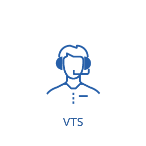
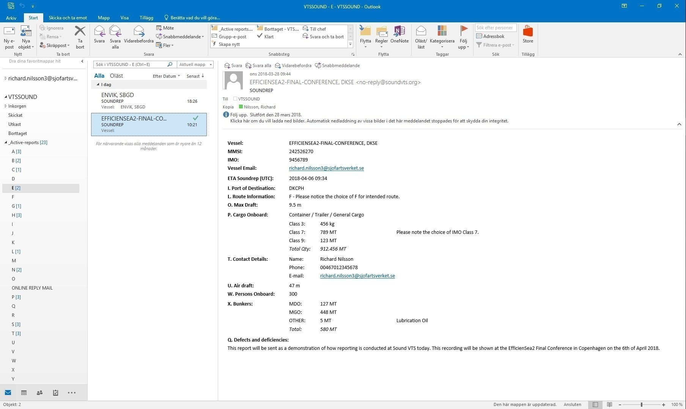
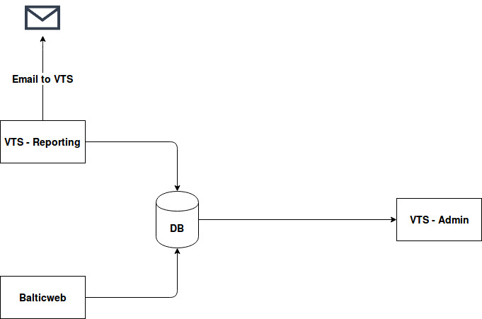
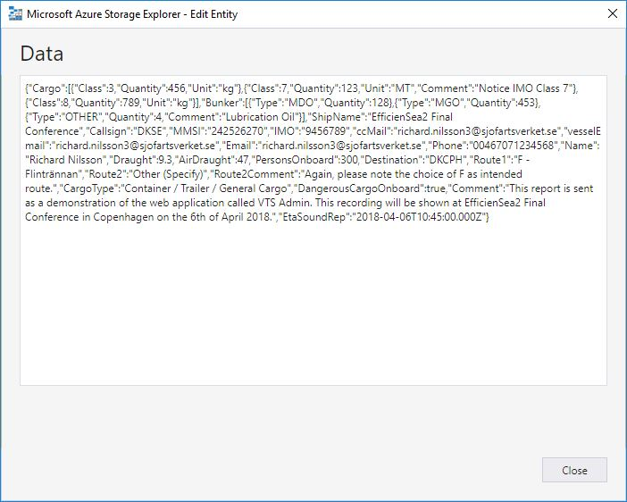

SRS/VTS Reporting
2018-04-06
Richard Nilsson
Last Slide

Location of SOUNDREP
Solutions for VTS/SRS reporting
Reporting at Soundrep today
Email report

Interaction between services

Report in Azure DB

JSON prettified
How reports are presented in VTS Admin
Using the processed feature in VTS Admin
Baltic Web
Future
- Information collected automatically from ships' equipment
- Officer to just verify and press send
First Slide